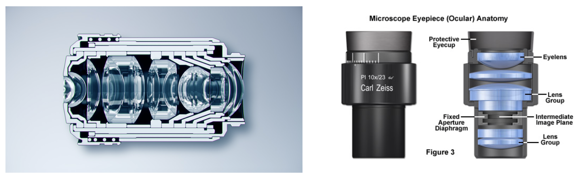
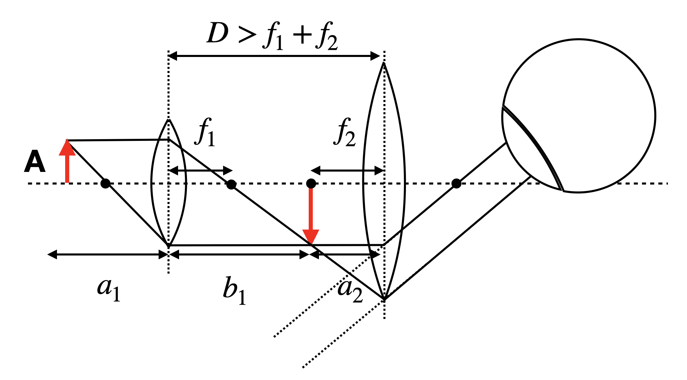
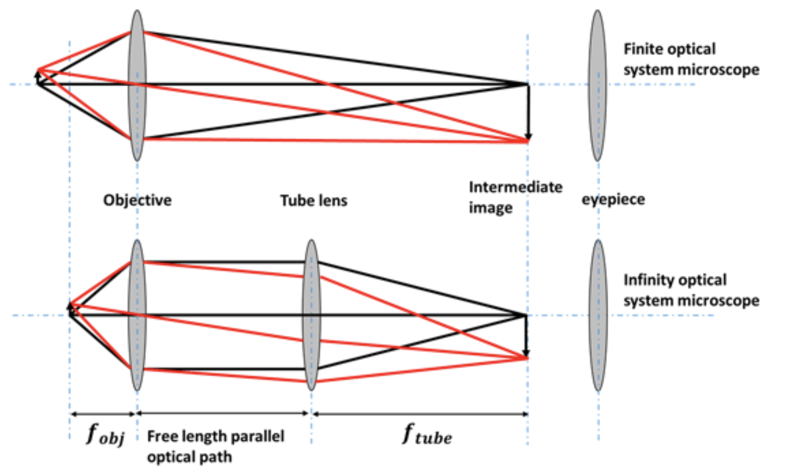
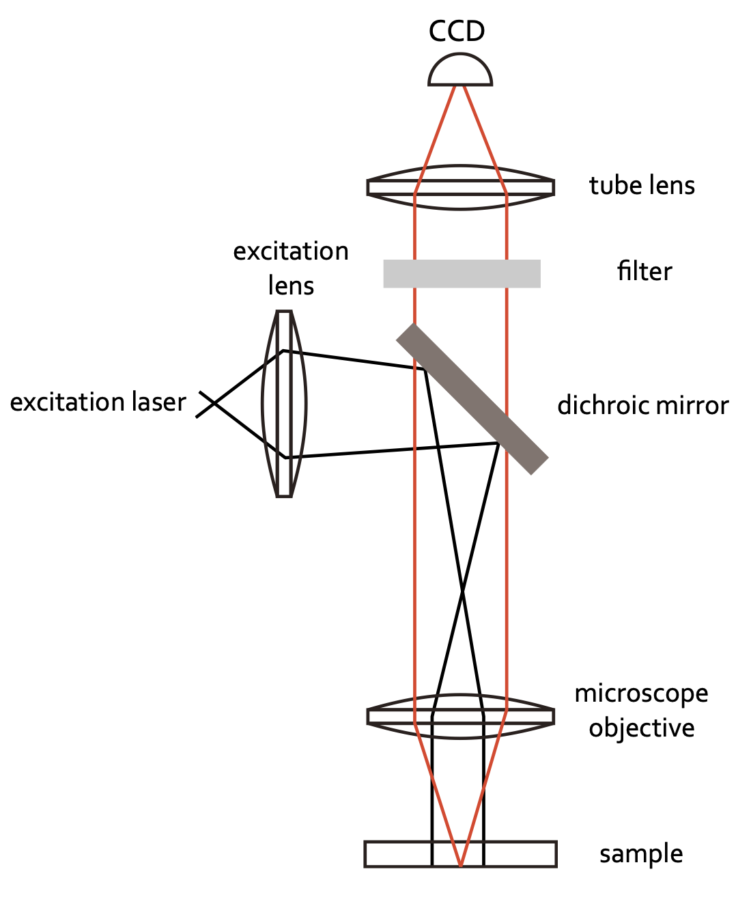
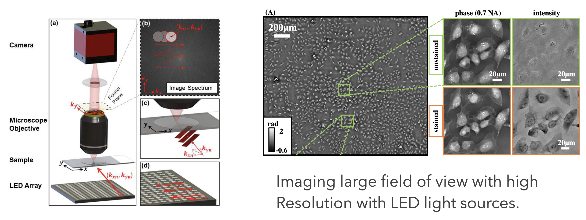

This page was generated from `/home/lectures/exp3/source/notebooks/L5/Microscope.ipynb`_.

Microscope¶
The simplest form of a microscope consists of an objective lens with a focal distance \(f_1\) and a magnifying glass called eye-piece with a focal length \(f_2\). In this system of two lenses (which are itself systems of lenses in modern microscopes, see below),
 |
|---|
Fig.: Cut through a microscope objective lens (left) and an eye-piece. |
the object is placed at a distance \(f_1< a_1<2f_1\) from the objective lens creating a real and reversed image at a distance \(b_1\) behind the lens. This reversed image is observed by the eye through the eye-piece. The image of the objective lens is thereby adjusted to appear at the focal distance of the eye-piece.
 |
|---|
Fig.: Sketch of a simple microscope. The strange object on the right is an eye. |
For this simple microscope system we may calculate first the intermediate image position \(b_1\):
resulting in
If we assume a \(\delta\) to be the distance of the object from the focal point of the objective lens, we even find for \(\delta \rightarrow 0\)
The intermediate image of size \(B_1\) is now imaged by a magnifying glass of focal distance \(f_2\). According to what we calculated earlier, we have now the observation angle
If we observe the object of a size \(A\) and the clear visual distance \(s_0\), it would cover an angle of
and we may obtain the total angular magnification
If we set the distance between the two lenses to \(D=b_1+f_2\) and \(a_1\approx f_1\) then we obtain
which says that the magnification is the result of the two focal length \(f_1,f_2\).
Modern microscopy¶
While the above description is correct for the simplest microscope you can think of, modern microscopes have much more complex light paths and work in general with optics, that is so-called inifinity corrected. Infinity corrected optics consists of an objective lens, which images the objects in the focal plane to infinity. Such an objctive lens always comes with a second lens, the tube lens, which together are designed to give a magnification specified at the objective lens housing.
 |
|---|
Fig.: Infinity optics vs. normal microscopy optics. |
Infinity optics allows you to have a free length with a parallel optical path where you can insert optical elements. There is no fixed tube length as in the case sketched above, where the distance of the intermediate image has to be considered. Therefore, it has tremendous technical advantages. Common optical microscopes are further today coupled to CCD cameras to record images digitally. Yet, an eye-piece may still be available in many cases. The sketch below shows the light path for a simple fluorescence microscope recording fluorescence images with a camera.
 |
|---|
Fig.: Simple fluorescence microscope. |
The possibility to digitally record images creates endless possibilities to computationally enhance and combine images. Nowadays the field of optics is one of the fastest developing fields in physics with numerous new techniques appearing every week. In this field of imaging methods of machine learning also play an increasingly important role. While I’m not ablields in physics with numerous new techniques appearing every week. In this field of imaging methods of machine learning also play an increasingly important role. While I am not able to refer to all possible optical microscopy techniques he to refer to all possible optical microscopy techniques here, I will exemplarily show some data from the Waller group at Berkley using computational methods to enhance the resolution by keeping at the same time a large field of view for imaging. This technique is called ptychography and can be understood if you consider Fourier Optics (a field of optics describing ligh propagation in terms Fourier transforms).
 |
|---|
Fig.: Ptychographic imaging with LED arrays. |
There is a massive amount of other techniques with increadible images being generated. Have a look around.